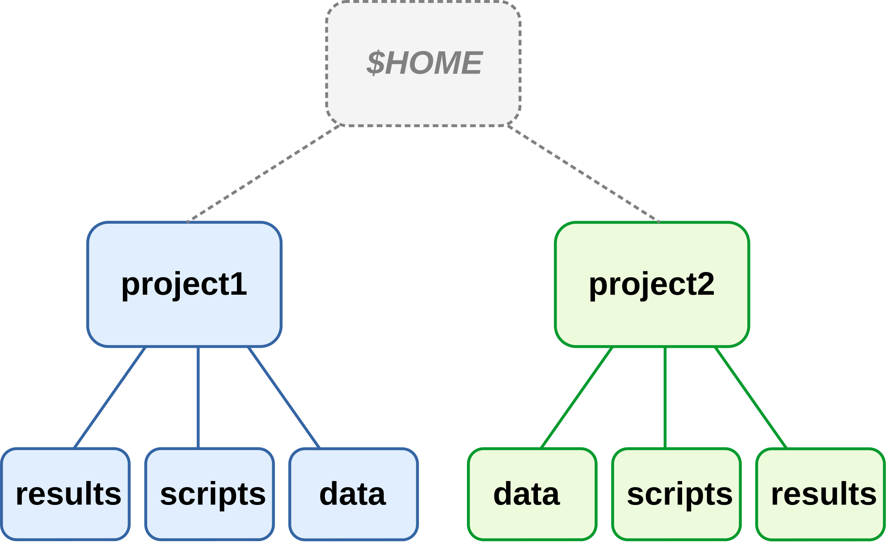
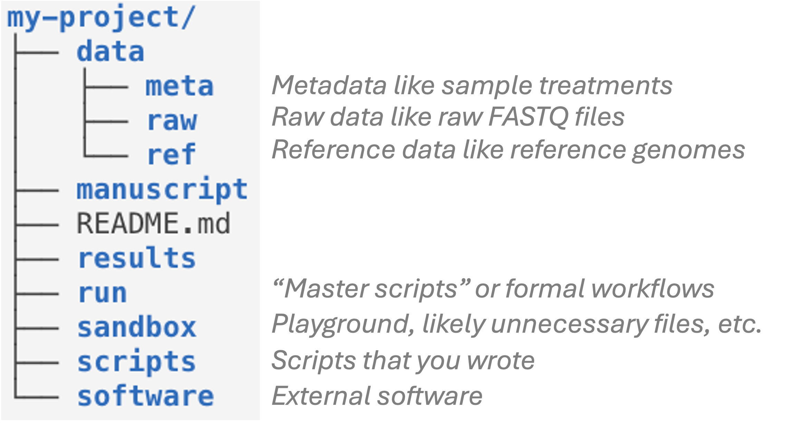
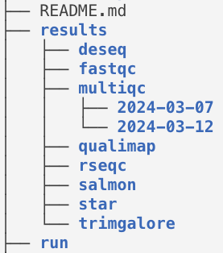
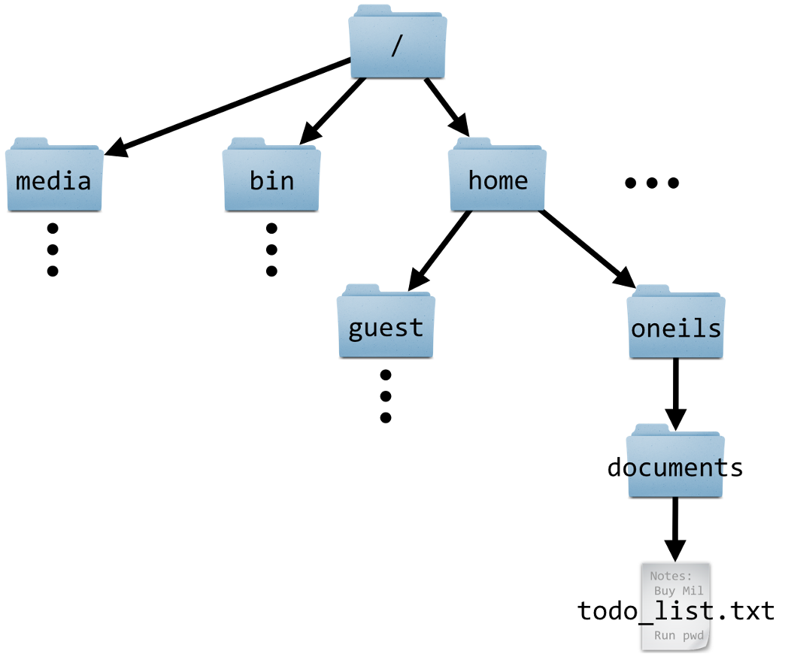
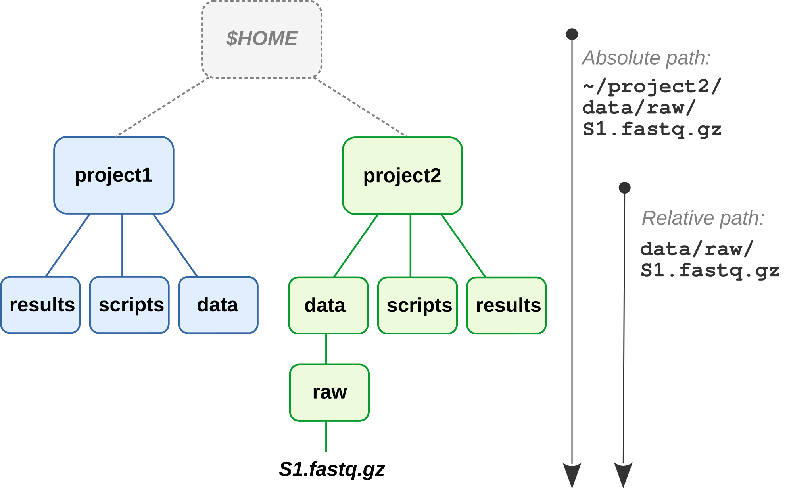
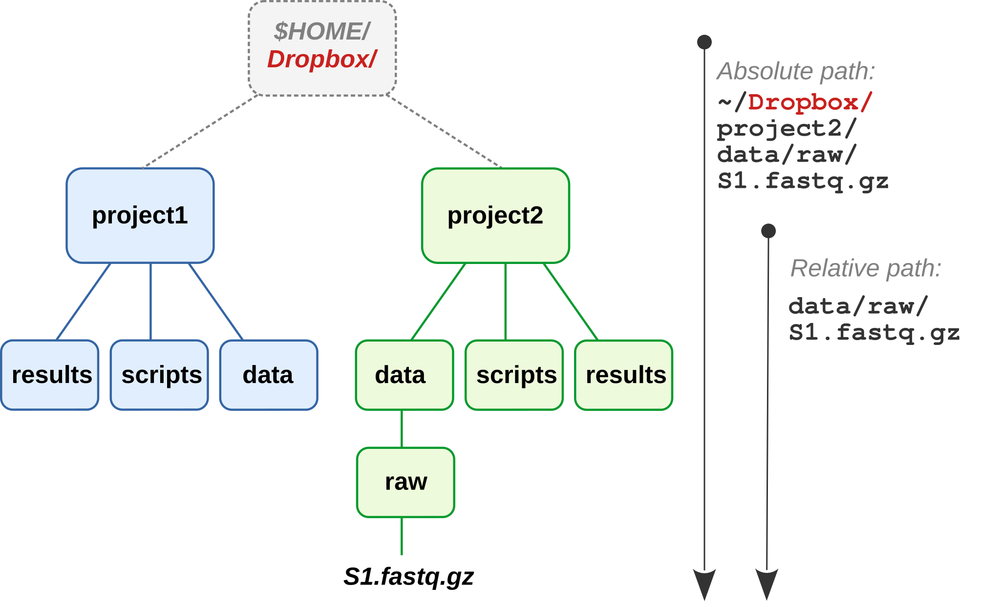
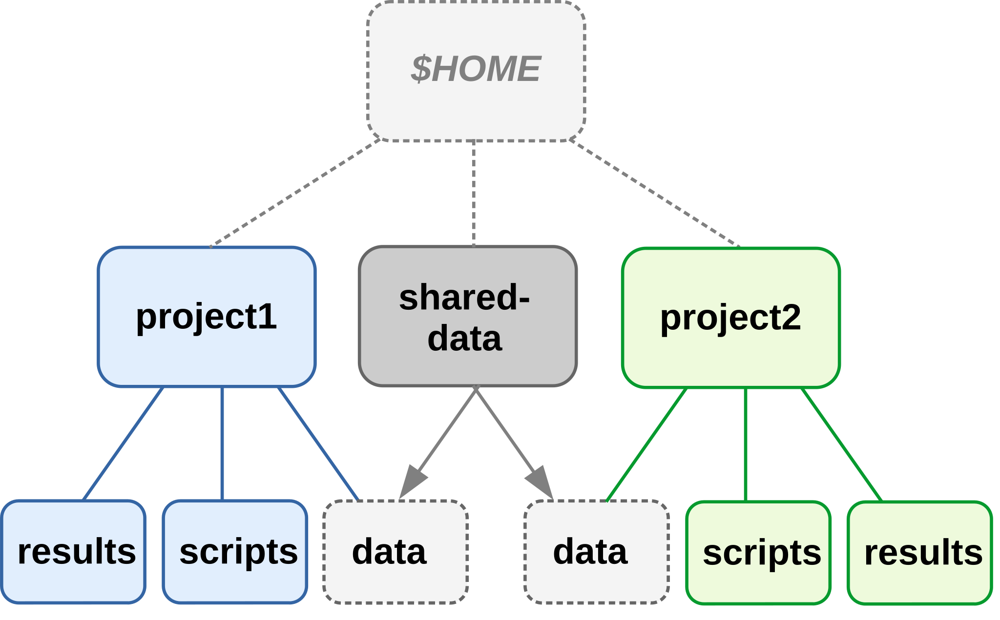
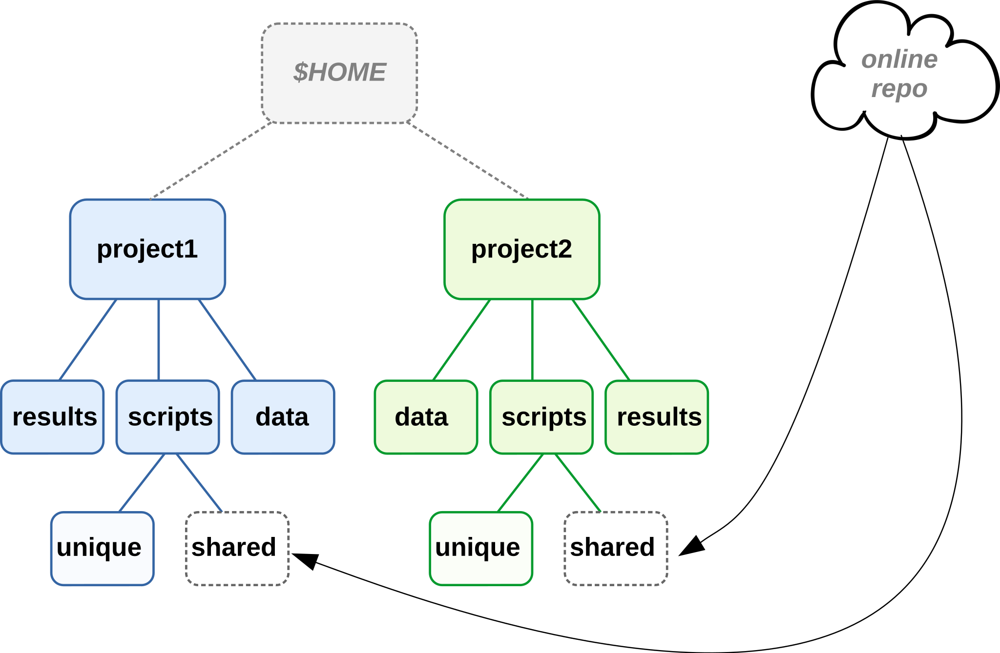

Project file organization and documentation
Week 3 - Part I
Overview
This week
- This page:
- Learn some best practices for file organization and management for your research projects, and documentation of your projects
- Also today
- Get to know our text editor, VS Code.
- Learn how to use Markdown for documentation (and beyond).
- Second session
- Learn the basics of working in the Unix shell.
This session
Having good research project documentation and file organization facilitates:
- Collaboration with others and your future self
- Reproducibility
- Automation
- Version control
In short, good project documentation and file organization is a necessary foundation to use this course’s tools and to reach some of its goals.
Relatedly, Noble (2009) cited two principles guiding his set of recommendations on this topic:
- Someone unfamiliar with your project should be able to look at your computer files and understand in detail what you did and why.
- Everything you do, you will probably have to do over again.
Keep those principles in mind while we discuss the recommendations below!
1 File organization and management
We will discuss the following set of best practices and recommendations for research project file organization and management:
- Use one folder (folder hierarchy) for one project
- Separate different kinds of files using a consistent folder structure
- Avoid manual editing of both data and results
- Use relative paths to refer to files and folders within your project
- Have good file and folder naming practices that favor machine- and human-readability
TBA
1.1 Use one folder for one project
For one research project, all files should be contained in one folder — or we should perhaps say one hierarchy of folders, since you can and should liberally make use of “subfolders”. In other words, you should not store files associated with one project scattered across a computer.
For example:

(The
$HOME folder represents your personal Home folder.)Another way to look at this is that for a given research project, you should be able to pinpoint a specific folder, like the project1 folder in the image above…
- that contains all files related to that project..
- while not containing any files that are unrelated to that project.
When you have a single directory hierarchy for each project, it is easier to:
- Find files
- Share or back up your entire project
- Avoid throwing away stuff in error
1.2 Separate different kinds of files using a consistent folder structure
Within your project’s folder hierarchy, you should use subfolders to clearly separate, among others:
- Code
- Data
- Results
These folders and the files within them should also be named consistently, following certain best practices as we’ll discuss below.
While managing your files, you should also treat raw data and results differently:
Treat raw data, once it has been collected or received, as read-only (never edit the original files!) and highly valuable (make backups!)
Treat results as essentially disposable, because you should be able to regenerate them easily with the skills you will learn in this course (see also the section on avoidng manual editing below).
An example project folder structure
Here is one good way of organizing a project with a set of top-level folders:

my-project, which e.g. contains the data folder that in turn contains other folders. Folders are shown in blue and files in black.Another important good practice is to use subfolders liberally and hierarchically. For example, in omics data analysis, it often makes sense to create subfolders within results for each piece of software that you are using:

results organized by and named after the software that produced the results. Separate runs for a single program (multiqc) are grouped into further subfolders by date.These recommendations only go so far, and several things can be modified depending on personal preferences and project specifics — for example:
Naming of some folders, like:
resultsvsanalysissrc(“source”) vsscripts
Some recommendations (such as Buffalo) separate data into
data/rawanddata/processedfolders, though this blurs the line between data and analysis results, and I much prefer to put “processed data” withinresults.Noble (2009) recommends that subfolders within
resultsare first organized by date. I personally don’t think this works well for most omics analysis.Sometimes the order of subdirs can be done in multiple different ways. For example, where to put QC figures —
results/plots/qcorresults/qc/plots/?You can start folder and file names with numbers so that they would automatically be sorted in a logical way (i.e. step 1 then step 2, etc.), e.g. within
results. That can be really neat and clear but the drawback of this is that if you insert a step, a lot of renaming needs to be done.
1.3 Avoid manual editing of data and results
As mentioned above, once they have been produced, raw data files should never be edited directly. Instead, any data processing or even correction should be done by producing separate edited copies of the data.
Moreover, you should also avoid manually editing results files. As Abdill et al. (2024) explain:
For example, if script A processes raw data into a table of gene expression levels, and script B summarizes this table by pathway, we should be concerned if there is a step after script A that requires a user to open the table and edit fields by hand to prepare the data for script B. Such quick fixes can be tempting, but they also add risk: A researcher could easily add a typo, corrupt a file in unexpected ways, or forget the step altogether.
If at all possible, you should use code to make such fixes, because this code can be included as part of the rest of your projects “workflow” and make the fix reproducible — and much easier to repeat if needed (recall the second of Noble’s guiding principles mentioned above!).
1.4 Use machine- and human-readable file names
Here are three key principles for good file names (from Jenny Bryan) — they should:
- Be machine-readable
- Be human-readable
- If approproate, be ordered correctly by default alphanumeric file sorting
We’ll go into each of these aspects below.
Machine-readable
Consistent and informative naming helps you to programmatically find and process files.
In file names, you can provide metadata like Sample ID, date, and treatment:
sample032_2016-05-03_low.txt
samples_soil_treatmentA_2019-01.txt
With such file names, you can easily select samples from e.g. a certain month or treatment (TBA change this)
ls *2016-05* ls *treatmentA*Don’t use spaces in file names, as these lead to inconvenience at best and disaster at worst when working in the Shell – and to some extent with other programming languages as well.
More generally, only use the following characters in file names:
- Alphanumeric characters A-Za-z0-9
- Underscores _
- Hyphens (dashes) -
- Periods (dots) .
Human-readable
“Name all files to reflect their content or function. For example, use names such as bird_count_table.csv, manuscript.md, or sightings_analysis.py.”
— Wilson et al. 2017
Combining machine- and human-readable
One good way (opinionated recommendations):
- Use underscores (_) to delimit units you may later want to separate on: sampleID, batch, treatment, date.
- Within such units, use dashes (-) to delimit words:
grass-samples. - Limit the use of periods (.) to indicate file extensions.
- Generally avoid capitals.
For example:
mmus001_treatmentA_filtered-mq30-only_sorted_dedupped.bam mmus002_treatmentA_filtered-mq30-only_sorted_dedupped.bam . . mmus086_treatmentG_filtered-mq30-only_sorted_dedupped.bam
Playing well with default ordering
Use leading zeros for lexicographic sorting:
sample005.
(If you don’t do this,sample11will appear beforesample2, etc.)Dates should be written as
YYYY-MM-DD: for example,2020-10-11. Besides leading to correct ordering, this format is also unambiguous.Group similar files together by starting with same phrase, and number scripts by execution order:
DE-01_normalize.R DE-02_test.R DE-03_process-significant.R
1.5 Use relative paths
To understand this recommendation, you first need to learn more about paths and folder structures.
Terminology and concepts related to paths
“Directory” (or “dir” for short) is another term for folder, that is commonly used e.g. in coding contexts.
The “working dir” is the dir that you are currently located in. In a command-line interface, like the Unix shell we’ll learn after this, you are always in a certain working dir (and the same is basically true in a regular file browser).
“Unix-based” operating systems include Mac and Linux (OSC uses Linux), and these have a single starting point to the directory structure: the root directory, depicted as
/. On a Windows computer, there are often multiple dir structures, but they similarly have starting points, such asC:/.


A “path” gives the location of a file or directory, in which directories are separated by forward slashes (
/)1.So, in a path, a leading
/is the root dir, and any subsequent/are used to separate dirs. For example, the path to our OSC project’s dir is/fs/ess/PAS2880. This means: the dirPAS2880is located inside the diress, which in turn is inside the dirfs, which in turn is in the computer’s root directory.Why all this talk of paths? When we code, we always use paths to refer to files and dirs.
Exercise: Figure out the path
In the above schematic on the left, what is the path to the file todo_list.txt?
Click to see the solution
The path to the file todo_list.txt is: /home/oneils/documents/todo_list.txt
Absolute versus relative paths
The location of any file or dir can be referred to in two different ways, using either:
An absolute path (e.g.
/fs/ess/PAS2880)
A path that begin with a/starts from the computer’s root directory, and is called an “absolute path”.
(It is equivalent to GPS coordinates for a geographical location, and works regardless of where you are).A relative path (e.g.
CSB/unix/sandboxortodo_list.txt)
A path that starts from your current working directory is a “relative path”.
(It works like directions along the lines of “take the second left:” it depends on your current location.)
In the example above, how can the mere file name todo_list.txt represent a path? (Click for the solution)
A file name like todo_list.txt, with no directories included, can be seen (and is often used!) as a relative path that implies that the file is in our current working dir.
./ preface, e.g.: ./todo_list.txt. We’ll talk about the . notation next week.)
Why you should prefer relative paths
Given that absolute paths do not depend on your working dir, while relative paths do and therefore won’t work if you’re elsewhere — don’t absolute paths sound better? What could be a disadvantage of them?
Absolute paths:
- Don’t generally work across computers
- Break when you move your entire project dir
Relative paths, on the other hand, keep working when moving the project within and between computers — as long as you consistently use the top-level dir of the project as the working dir.

The relative path starts from the relevant project’s top-level dir, which is good-practice.

Dropbox.The absolute path to the FASTQ file has changed,
but the relative path from the project’s top-level dir remains the same.
2 Documenting your research project
Slow down and document TBA
“README” file(s)
It is common practice to store project documentation in files that are called “README” or at least include that phrase in their name.
We saw one such file in the example project folder structure above. You should always have a README(-style) file in the top-level folder of your project, and you may use additional README files elsewhere depending on the size of your project and how you prefer to structure your documentation.
Use README files to document the following:
- Your methods
- Where/when/how each data and metadata file originated
- Versions of software, databases, reference genomes
- …Everything needed to rerun whole project
Electronic lab notebook (organized by date)
TBA
Final workflow file (organized in order of execution)
TBA
Use plain text files
In this course, we’ll be working almost exclusively with so-called “plain-text” files (files with .txt and related extensions). These are files that can be opened by any text editor on any computer, and can also be processed by Unix commands and any other programming language.
Plain-text files are different from so-called “binary” and proprietary formats like Microsoft Excel (e.g. .xlsx) or Word (e.g. .docx) that can often be opened and edited only in their respective programs. That can pose many problems: for example, these programs are not always available, and version mismatches may make files impossible to open.
Many common omics file formats, like FASTA, FASTQ, and GFF, are plain-text. And while their simplicity may seem limiting, plain-text files are generally preferable for reproducible science because they:
- Can be accessed on any computer, including over remote connections
- Are future-proof
- Allow to be version-controlled
For these reasons, it is best-practice to also use a plain-text format to document your research, and we will practice extensively with that in this course. Specifically, we will use so-called Markdown files, which strike a nice balance between ease of writing and reading on the one hand, and formatting options on the other hand. In the next session, we will learn the basics of the Markdown “syntax”.
3 At-home reading
3.1 How to define and separate your projects?
From Wilson et al. 2017 - Good Enough Practices in Scientific Computing:
As a rule of thumb, divide work into projects based on the overlap in data and code files:
If 2 research efforts share no data or code, they will probably be easiest to manage independently.
If they share more than half of their data and code, they are probably best managed together.
If you are building tools that are used in several projects, the common code should probably be in a project of its own.
Projects with shared data or code
To access files outside of the project (e.g., shared across projects), it is easiest to create links to these files:

project1 but used in both projects.project2 contains a link to the data.But shared data or scripts are generally better stored in separate dirs, and then linked to by each project using them:

These strategies do decrease the portability of your project, and moving the shared files even within your own computer will cause links to break.
A more portable method is to keep shared (multi-project) files online — this is especially feasible for scripts under version control:

For data, this is also possible but often not practical due to file sizes. It’s easier after data has been deposited in a public repository.
Footnotes
But Windows uses backslashes (
\).↩︎